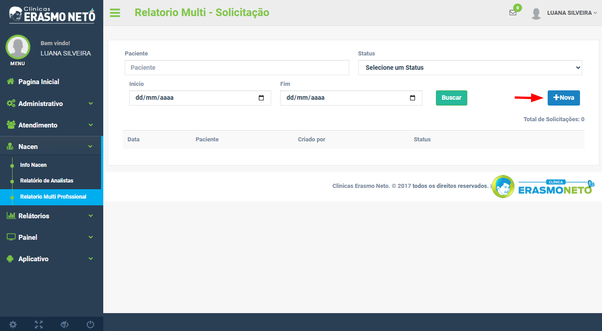

Guia Rápido: Relatório Multi
1. Acesso ao módulo
- No menu principal, acesse Atendimento.
- Selecione a opção Relatório Multi Profissional.
2. Criar nova solicitação
- Clique no botão (+ Nova) para iniciar uma nova solicitação.
🛈 Observação: O paciente deve estar com status ativo e vinculado a um atendimento sob andamento.
3. Seleção e observações
- Selecione o paciente desejado.
- Caso necessário, adicione observações complementares no campo disponível.
- Clique em Cadastrar para concluir a solicitação.
4. Encaminhamento automático
- Após o cadastro, o sistema enviará automaticamente o relatório para cada profissional que
tenha realizado pelo menos 8 atendimentos nos últimos 2 meses.
5. Acompanhamento das solicitações
- Para acompanhar o andamento das solicitações, acesse novamente o menu de Relatório Multiprofissional.
- Clique em Buscar para visualizar as solicitações em andamento ou concluídas.